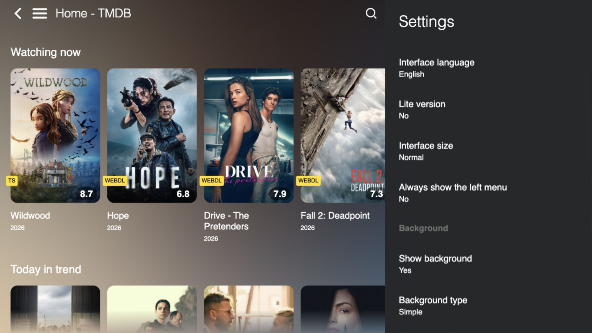
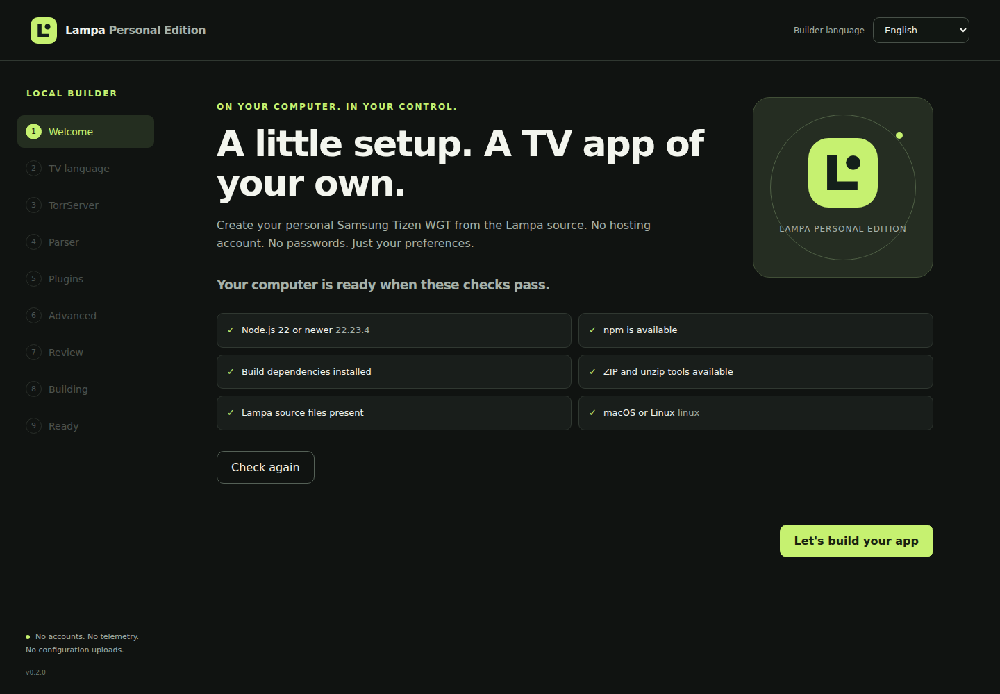
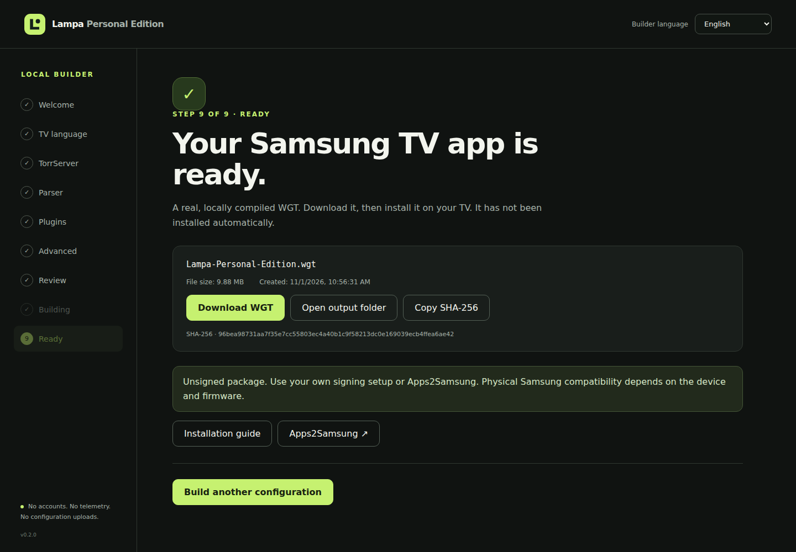
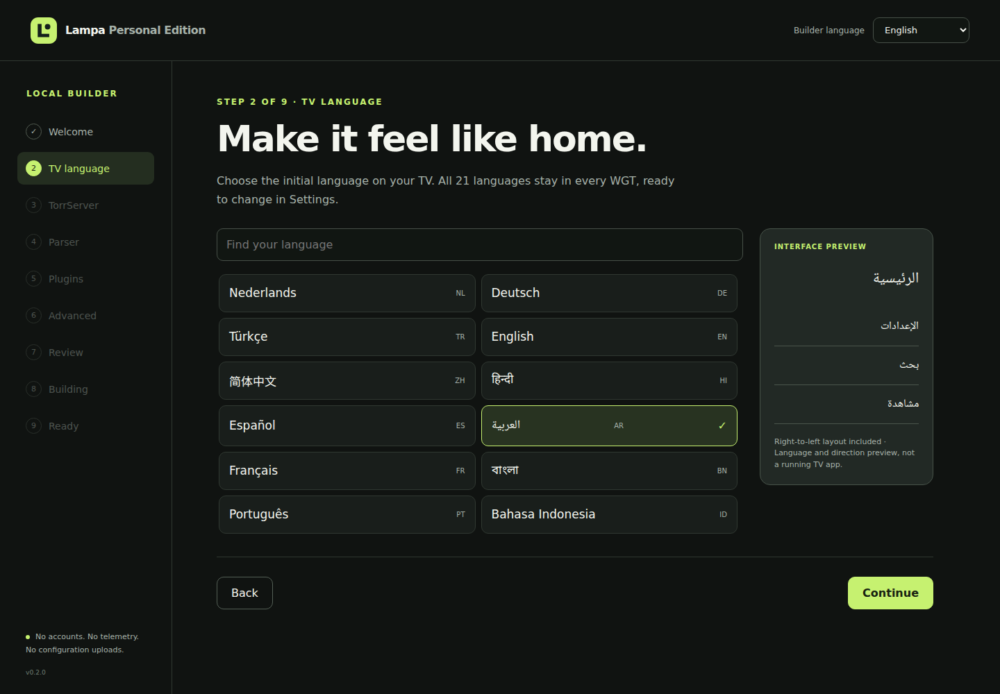
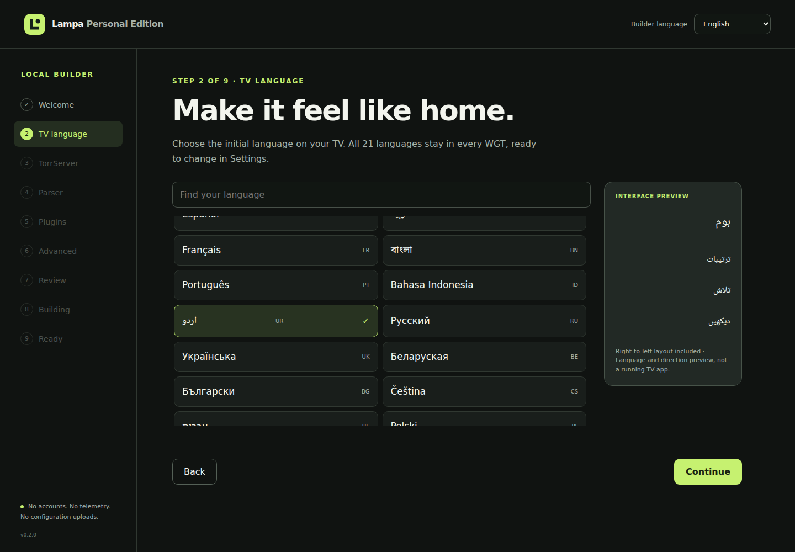
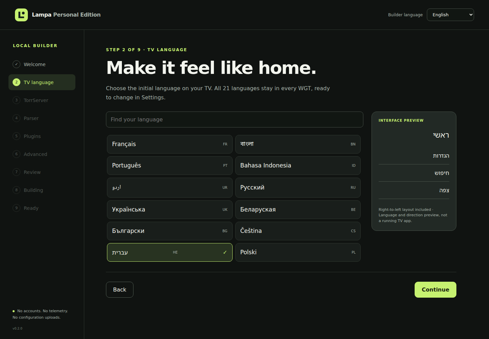

21 Languages
Native language names. Complete dictionaries. Arabic, Urdu and Hebrew with RTL.
Build your own Samsung Tizen app locally. Choose your language, configure TorrServer, review plugin preferences, and create a personal WGT — without hosting Lampa yourself.
No account. No cloud compiler. No configuration uploads.
Native language names. Complete dictionaries. Arabic, Urdu and Hebrew with RTL.
Your preferences stay on your computer. Build without a hosting account.
The actual application, compiled locally and packaged with its fonts and translations.
Your TV language, optional TorrServer, parser mode and plugin policy.
A guided setup that does the real work. Pick your preferences, review every setting, and watch the local compiler create your WGT.
Choose from 21 TV languages. Use the Builder itself in English, Russian or Dutch. Skip TorrServer if you do not have one.

Explore the wizard →
A real file, its size and creation date, a verified SHA-256 and a separate installation guide. Your app is ready to download, not silently installed on a TV.
Your choice sets the initial TV interface language. Every WGT still contains all 21. Change your mind in Settings, without rebuilding.
Local fonts support Chinese, Devanagari, Bengali, Arabic/Urdu and Hebrew. RTL follows the interface; URLs and technical values retain their readable order.
Improve a translation ↗


Tell the local wizard how you want your app to start.
The existing Node.js and Gulp engine compiles Lampa on your computer.
Translations, binary fonts and the final ZIP archive are checked.
Download your WGT and install it separately on your Samsung device.
TorrServer runs separately. Add an HTTP(S) address, or leave it blank and configure it on your TV later. The Builder never tests or contacts your server address.
No server, indexer or media subscription is included. Playback depends on your own configured services and available sources.
Connect a separately configured indexer service.
Use your own indexer management setup.
Choose Lampa's existing TorrServer parser mode.
Browse the built-in extension catalogue without automatically running third-party code. Plugins are disabled by default. Enabling them in the wizard requires an explicit choice; new installations still require confirmation on the TV.
Understand plugin preferences ↗Connect your Samsung device and computer on the same network. Follow the device-specific Developer Mode instructions.
Choose Custom WGT and select your downloaded file. Follow the certificate or re-signing instructions.
Confirm the language and finish server settings on your TV. The separate app ID lets it coexist with upstream Lampa.
WGTs are unsigned. Installation depends on signing, model and firmware. This independent project is not certified or endorsed by Samsung.
The package targets Samsung Tizen TV 5.0+. macOS and Linux are the Builder's supported test platforms. Windows has not been verified.
| Local Builder | macOS / Linux · Node.js 22+ |
|---|---|
| Application package | Tizen TV · required version 5.0 |
| Physical device certification | Not performed |
The Builder binds only to 127.0.0.1. Configuration stays in the current browser session and the local WGT. There is no account, telemetry or configuration upload.
The TV application can contact metadata providers and services you choose. Third-party plugins have their own network behaviour. “Local build” does not mean the installed TV app never uses the internet.
Do not share personal WGTs. The wizard does not request passwords or secret tokens.
No. The WGT contains the compiled application, translations, fonts and local assets. Your optional TorrServer or parser service runs separately.
No. This is a static product page and interactive preview. Run npm run builder on your own computer for the real compiler.
Yes. Leave the address empty. It does not block compilation. Configure your own playback services on the TV when needed.
No. All 21 interface languages are packaged in every WGT and remain available in Settings.
No. It sets your runtime preference. Plugins are disabled by default, and each new third-party installation still has a TV consent step.
No. This is an independent community fork. Physical TV certification has not been performed. Credit for the original application belongs to Lampa and its contributors.
Yes. npm run build:personal and its existing flags are preserved. The CLI and wizard use the same build engine.
Know a better phrase? Spot an RTL issue? Help the next person enjoy Lampa in their language. A focused translation fix does not require redoing every screenshot for all 21 languages.
Install Node.js 22+ and the zip/unzip tools, then open your terminal. The last command opens the local visual Builder.
Read the Quick Start ↗git clone https://github.com/vbrekher/lampa-personal-edition.git cd lampa-personal-edition npm ci npm run builder